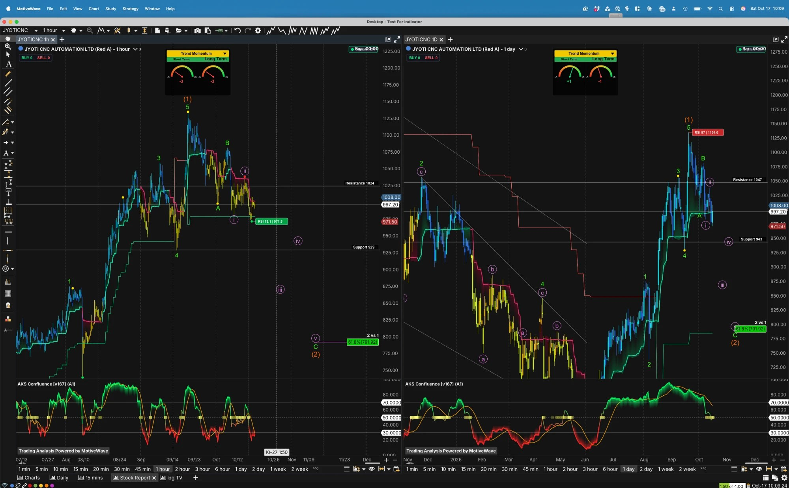

Industrials — Capital Goods / CNC Machine Tools: turning, milling, multi-axis and 5-axis machines for aerospace & defence, auto, general engineering and EMS; Rajkot (Gujarat), with a French subsidiary chain (Jyoti SAS → Huron Graffenstaden)
● Governance: Huron probe; 13.08% of shares pledged (Jun-26)
01
Company Overview
What They Do
Jyoti CNC Automation Limited (Rajkot, Gujarat; founder-MD Parakramsinh Jadeja, in business since 1991) makes CNC machine tools: turning centres, turn-mill, vertical and horizontal machining centres, 3-axis and simultaneous 5-axis, and multi-tasking machines — 200+ variants in 44 series (FY26 annual report). It runs two plants, a service centre and an R&D centre at Rajkot and is vertically integrated (own foundry, machine shop, sheet-metal and paint shops, in-house spindles and tool changers). It buys controllers (Siemens; Fanuc as an alternative) with a ~12-month lead time; its own controller is ~2 years from commercialisation, so today it is an integrator, not a controller maker. Units are mostly entry-level (1,349 of 1,406 machines in Q1 FY27); high-end machines drive revenue and margin. Management claims a 10–12% domestic share of the high-precision segment (CRISIL: ~10% by volume) and 15,000+ customers.
French subsidiary chain: Jyoti SAS (France, 100%) holds Huron Graffenstaden SAS (Strasbourg; bought 2007, control from 1 Jan 2008), which holds Huron Fräsmaschinen GmbH (Germany), Huron Canada and Huron Makina (Turkey). Huron is under a French export-control judicial investigation disclosed on 12 Apr 2026 (§03). No “Condor” entity was found in any source reviewed for this report.
FY26 consolidated revenue was ₹2,093 Cr (+15.1%), EBITDA ₹527 Cr (25.2%), net profit ₹336 Cr (+6.3%), EPS ₹14.78; standalone revenue ₹1,949 Cr, EBITDA ₹564 Cr (29%), PAT ₹391 Cr. Q1 FY27 (7 Aug 2026): consolidated revenue ₹508.5 Cr (+24%), EBITDA ₹108.8 Cr (21.4%), PAT ₹57.1 Cr (−20%); standalone revenue ₹509.1 Cr (+36.7%), EBITDA ₹138.7 Cr (27.2%), PAT ₹87.5 Cr (+21.3%). Order book ₹4,848 Cr at 30 Jun 2026 (₹4,732 Cr + ₹601 Cr intake − ₹485 Cr executed ties; my arithmetic), ~2.1x revenue per CRISIL. CRISIL assigned A+/Stable on 15 Oct 2026.
Key Competitive Advantage: A domestic 5-axis and high-precision capability in a market where ~59% of consumption is imported (IMTMA FY26 via secondary summaries; my arithmetic), delivered through vertical integration that keeps standalone EBITDA at 28–29%, plus a ₹4,848 Cr backlog and a capacity ramp from 6,000 to 16,000 machines a year. The edge is execution, integration and capacity, not legal IP (no patents found), and the imported controller and a Hosur competitor are the pressure points. Detail in §02.
Order-Book Mix by Segment (30 Jun 2026)
Order-book mix at 30 Jun 2026 (Q1 FY27 call, 7 Aug 2026): A&D 38 / General engineering 20 / Auto 19 / EMS 13 / Die & mould 4 (%). Those five sum to 94%; the remaining 6% is not itemised in the sources and is drawn as a flagged residual slice. The Q4 and Q1 calls state the auto / general-engineering split inconsistently (19/20 vs 20/19) and the transcripts are machine-generated. Revenue mix, Q1 FY27: A&D 37 / Auto 35 / General eng. 17 / EMS 6 / Other 5; FY26: 39 / 26 / 23; FY25 (Infomerics): ~45 / 23 / 20. Machinist.in reported A&D at 41% of the book in Feb 2026 (a different date). Rupee values are share × ₹4,848 Cr (my arithmetic). Management says the book converts over 18–20 months; some outlets reverse intake and execution (the roll-forward supports 601 in, 485 out).
Earnings-Quality Rating: Where The Profit Comes From
Quality rated 2 / 5 ■■■■■
Bull: standalone margins of 27–29% and standalone PAT ₹391 Cr in FY26 (+26%); a ~2.1x order book; consolidated EBITDA margin of 25.2% in FY26 met the ~25% guide; CRISIL rates liquidity “Strong” with ₹400–500 Cr expected annual cash accrual.
Bear: operating cash flow was only ₹54.4 Cr in FY26 against PAT of ₹336 Cr (~16%; ₹87.3 Cr before a ₹32.9 Cr customs-seizure item), free cash flow about −₹269 Cr after capex (my arithmetic); cash conversion cycle 359 days (Screener); ₹55 Cr of FY26 standalone profit does not reach the consolidated line (Jyoti SAS contribution (56.65)); and TTM “other income” of ₹44 Cr flatters pre-tax profit (§17).
02
Competitive Advantage (Moat) Analysis
Dimension
Rating
Commentary
Brand Strength
3 / 5 · Moderate
Strong in India’s mid-market (management: 10–12% domestic share of the high-precision segment; CRISIL ~10% by volume; 15,000+ customers; 1,35,000+ installed machines per the annual report). Huron adds a European 5-axis name. But the brand is not a Mazak or DMG Mori equivalent and 96% of units are entry-level. Rating is my judgement from the evidence.
Network Effects
1 / 5 · Absent
None identified. Service-centre density helps retention but is not a network effect.
Switching Costs
2–3 / 5 · Low–Moderate
Operators, fixtures and programs are retrained per platform, and aerospace needs qualification (Infomerics cites marquee repeat orders). But machines are bought one at a time: the IPO summaries flag no long-term purchase contracts, while Infomerics mentions “long term supply agreements” — conflict kept. Sales are direct (dealers 0.32% of sales, BRSR).
Cost Advantage / Barriers
3–4 / 5 · Moderate–High
Vertical integration (foundry, spindles, tool changers) supports a 28–29% standalone EBITDA margin, high for machine tools. Barriers: capacity (6,000 → 16,000), a 24–30 month backlog and 12-month controller lead times for rivals. Weaknesses: controllers are imported (Siemens / Fanuc, ~30% of components per a Business Standard IPO report), and a competitor with a 10,000-machine plant at Hosur was named on the Q1 call (management declined to comment).
Patents / Proprietary Tech
2 / 5 · None found
No patent count or grants found. The in-house controller / HMI is not commercial (~2 years away). The moat is know-how and integration, not legal IP. Competitors named in prospectus summaries and call mentions (LMW, Ace Micromatic, Lokesh Machines, Mac Power CNC; generic: DMG Mori, Mazak, Haas, Makino, Chinese imports) are unverified — no document ranks Jyoti against them.
What This Moat Does NOT Protect Against
Concentration: aerospace & defence is ~38% of the book (the annual report itself warns that “an increasing share of revenue and order book is derived from aerospace and defence”), with export-licence exposure on non-EU buyers. Top-10 customers were ~27% of FY26 revenue (CRISIL) against top-3 ~32% in the IPO summary (six months to Sep 2023) — different dates and bases. HAL, BEL and Tata as direct customers: not verified (HAL appears on the Q1 call only as a hypothetical; MBDA orders were mentioned; Tata Electronics came up with no figures). Controller dependence: Japanese and German controllers carry a ~12-month lead time and supplier-government export licences. Capacity race: the Hosur plant and growing Taiwan / Korea imports in heavy machines. Cancellations: none disclosed anywhere (not found); management calls the Huron deferral “not cancellation”. Execution: inventory turnover fell to 1.08x standalone / 1.22x consolidated (from 1.27x / 2.06x) and the operating cycle was 211 days in FY25 (218 a year earlier; Infomerics), with raw material 228 days and WIP 112 days. Foreign exchange: ~26% of revenue is overseas plus euro exposure through Huron; ~₹10 Cr of unrealised forex loss hit Q1 FY27; the hedge ratio is not disclosed. PLI: management says it applied and is eligible (“close to 50%” combined central and state subsidy); I could not verify the scheme terms or the amount. Litigation / tax: a ₹4.46 Cr CGST demand (17 Nov 2025) was reportedly set aside on 29 May 2026 (a summary only); a ₹9.07 Cr TDS compounding payment (2024). No SEBI or exchange penalty found (annual report BRSR: nil); ASM/GSM lists not checked.
Litigation & Contingent Liabilities (standalone)
Contingent liability (₹ Cr, 31 Mar 2026)
FY26
FY25
Letters of credit & bank guarantees
176.78
115.43
Standby LCs & letters of comfort
264.34
167.43
Disputed indirect-tax items (approx.)
~24.65–25
—
Disputed income tax
nil
19.57
Customer compensation claims
1.34
—
Capital commitments
55.75
31.34
Source: FY26 annual report note 33, standalone. A consolidated contingent-liability note was not located. The two streams label the ~₹25 Cr tax lines differently (one: excise 2.27, CST 15.53, VAT 2.59, GST 4.03; the other: excise 2.27, income tax 4.03, TDS 15.53, CST 2.59, VAT 0.23, total 24.65) — the table is inconsistent between readings, so the total is shown as approximate. The ₹264.34 Cr standby / comfort letters are probably guarantees of subsidiary borrowings (my inference; the note does not say).
Synthesis: A narrow-to-moderate moat built on integration and capacity, not on legal or network barriers. The A+ ratings are real — CRISIL A+/Stable (15 Oct 2026) and Infomerics A+/Stable (standalone) — but a third agency (Brickwork) sits at BB+ “Issuer Not Cooperating”, and India Ratings was not found (§16). Moat ratings are mine.
03
Huron Probe & the Standalone–Consolidated Profit Gap, the Promoter Pledge, and Valuation vs Growth (PEG)
Q1 PAT (cons.)
₹57.1 Cr
−20% YoY on +24% revenue
Q1 PAT (standalone)
₹87.5 Cr
+21.3% YoY
Parent exposure to Jyoti SAS
₹501.7 Cr
₹341.60 Cr investment + ₹160.11 Cr loans (my sum)
Promoter shares pledged
13.08%
of total shares, 30 Jun 2026 (Sep UNVERIFIED)
P/E (TTM)
70.5x
55.8x on standalone EPS ₹17.88 (my arithmetic)
PEG (forward, my arithmetic)
≈ 2.3
trailing: not meaningful (§09)
Theme 1 — Profit Divergence: India Is Strong, the Group Line Is Not
Management view: the parent is “over 85% of group revenue”, demand for Huron machines is intact (no cancellations), revenue is deferred pending export licences and end-user certificates, and there will be “no impairment at all”. Q2 was expected to be better; Q3 / Q4 “lumpy”. CRISIL “has taken note” of the probe, says demand has been “largely unimpacted” and expects limited impact given Huron’s small scale.
What the numbers show: in Q1 FY27 standalone PAT rose 21% while consolidated PAT fell 20%; the ₹30.4 Cr gap (my arithmetic) matches the Huron loss of ₹30.33 Cr reported by Cofacto (an AI summary — secondary). For FY26 the ₹55 Cr gap sits beside a Jyoti SAS contribution of (56.65) versus +6.68 in FY25 (annual report consolidation schedule). Consolidated revenue (₹508.5 Cr) was essentially equal to standalone (₹509.1 Cr) in Q1, so after eliminations Huron added almost nothing to group revenue — my inference, consistent with ~₹35 Cr deferred. Consolidated profit also fell because other income dropped to ₹4.0 Cr from ₹20.5 Cr (Q1 FY26 had a ~₹20 Cr forex gain) and finance cost doubled to ₹24.3 Cr (my arithmetic bridge).
Conflicts kept: Jyoti SAS net assets are ₹(379.53) Cr in the FY25 consolidated note but (111.05) / (53.55) at Mar-26 / Mar-25 in the FY26 consolidation schedule — not resolved. Seized funds: ~€4.0 mn (Infomerics, April) vs €3.02 mn “at present” (audited note). The June internal report’s “85%+ of revenue is unaffected India” line is historical and was true of revenue, not of the consolidated profit.
Standalone vs Consolidated
₹ Cr
Standalone
Consolidated
Gap
FY25 PAT
310
316.0
+6 (cons. higher)
FY26 PAT
391
336.0
−55
FY26 EBITDA margin
29%
25.2%
−3.8 pts
Q1 FY27 revenue
509.1
508.5
−0.6
Q1 FY27 EBITDA (margin)
138.7 (27.2%)
108.8 (21.4%)
−5.8 pts
Q1 FY27 PAT
87.5
57.1
−30.4
Q1 FY27 finance cost
20.0 (6.9)
24.3 (12.2)
a year ago in brackets
Sources: Screener standalone and consolidated pages (17 Oct 2026); Q1 FY27 presentation (7 Aug 2026). Standalone and consolidated differences are my arithmetic. Management says the Q1 consolidated EBITDA shortfall is ~₹20–22 Cr from Huron deferral plus ₹10 Cr unrealised forex loss (adjusted consolidated margin 23.4%).
Theme 2 — The French Investigation: Facts, Exposure and Accounting
Event: disclosed 12 Apr 2026 — French customs / intelligence authorities (DNRED) opened a judicial investigation into Huron and some employees over export-control documentation for dual-use machinery. The Director General is restricted, about €4.0 mn was seized initially (Infomerics) vs €3.02 mn in the audited note, plus two Jyoti SAS residential properties and customs control of certain machines. The stock fell up to 16% intraday on 13 Apr (low ~₹692 from ₹819.20). Management denies the Russia re-export allegations raised on the 29 May call (allegation only), says 50+ European firms face similar probes (unverified) and gave a timeline of “2 years, 3 years, 5 years, we don’t know”. No charges, lifting of seizures or outcome were found.
Audit and exposure (FY26 annual report): the standalone auditors’ Emphasis of Matter says Jyoti SAS has accumulated losses, its net worth is eroded, and there is a material uncertainty on its going concern; the opinion is unqualified and no impairment was booked (discounted-cash-flow and “strategic” justification). Parent exposure: investment ₹341.60 Cr + loans ₹160.11 Cr = ₹501.7 Cr (my sum), against a standalone net worth of ₹2,000 Cr+. The count of Emphasis of Matter paragraphs (one vs two) differs between sources.
Revenue accounting: Q4 FY26 — ₹67 Cr of revenue reversed (~₹40 Cr margin); Q1 FY27 — Huron now books revenue on dispatch / end-user certificate, so ~₹35 Cr of revenue and ₹20–22 Cr of EBITDA were deferred; ~₹100 Cr (7–8 machines) is pending. Part of these figures rests on Substack posts (Madhu Periasamy, Abhinav Mishra) — secondary. Huron FY27 guide: revenue ₹300–325 Cr (₹300–350 Cr on 29 May) at 8–10% EBITDA, PAT-positive.
The 30 Jun 2026 figure is from the exchange-format filing; every later figure is a news item on different bases (share of total vs share of promoter holding) and is not reconciled. Lender / purpose not disclosed (“business purposes”). SAST Reg 31 filings were not read. Larger picture: promoters 62.55% (flat), Jadeja 26.91%, Jyoti International LLP 16.16%, Virani 14.45%.
Theme 4 — Valuation vs Growth
At P/E 70.5 the PEG is about 11.2 on last year’s EPS growth, 1.9 on the two-year FY24→FY26 CAGR and ≈ 2.3 on the only forward datapoint available; trailing quarterly growth is negative, so PEG is not meaningful there (full table and inputs in §09; all my arithmetic).
Source-quality note: primary reads: the FY26 annual report (BSE, filed 8 Sep 2026), the company investor presentation and the Q1 FY27 call (7 Aug 2026; transcript filed 14 Aug — machine-generated, with errors such as standalone revenue shown as “₹107 Cr”), the CRISIL rationale of 15 Oct 2026, Infomerics of 10 Feb and 21 Apr 2026, the Q1 FY27 shareholding pattern (30 Jun 2026) and Screener (16/17 Oct 2026). News, aggregator and Substack items — pledge movements, Huron detail, the price path, the Cofacto Huron-loss figure — are secondary and must be checked against exchange filings. Items I computed are marked “my arithmetic”.
04
Overall Sentiment & Momentum Prediction
Key Watch-Item
⚠ Does the rollover from ₹1,134.6 hold above ₹943 / ₹929 — and what does Q2 FY27 say on Huron revenue?
The stock closed ₹997.20 (+1.82%) on 16 Oct on volume of 442,775 (−65% vs average, MarketSmith) — a quiet bounce from ₹979.40, not a conviction move. The fall from the early-Oct top has no news cause found (no negative announcement surfaced; the AGM on 30 Sep passed its resolutions — single source). Q2 FY27 results are not yet dated (Q1 was 7 Aug; early-to-mid November is my inference from past dates). The Sep-26 shareholding filing is due by ~21 Oct.
Overall Sentiment
MIXED rich, but not depressed
MarketSmith Master Score C (58): EPS 60 FAIR, Price Strength 80 GOOD, Buyer Demand A−, Group Rank 50 of 197. The stock is +96% from the ₹580 low yet −12% from the ₹1,134.6 top. S&P consensus (4 analysts) averages ₹1,058 (+6%); the Bajaj ₹984 target is already exceeded and TipRanks is Neutral at ₹996. Institutions: FIIs 9.9% → 5.3% in four quarters; mutual funds rebuilt to 10.61%.
Momentum Prediction
1H BEARISH · 1D CONTESTED
Daily Trend Momentum gauges +1 / −1 (mixed); hourly −3 / −3 (bearish); RSI printed 87 at the ₹1,134.6 top and 19.1 at the ₹971.5 hourly low. The labelled count reads a wave (2) correction with a projected C leg toward ₹791.92 — a reading, not a forecast. Nearest hurdles ₹1,024 (1H) and ₹1,047 (1D); supports ₹943 / ₹929.
Framing note: A rich-valued, recently re-rated stock whose consolidated profit is shrinking on a subsidiary under investigation, with a high pledge and falling foreign ownership — set against a ₹4,848 Cr order book, 27–29% standalone margins and a new A+ rating from CRISIL. Both the bull case (domestic 5-axis import substitution, ~30% growth guided, capacity 6,000 → 16,000) and the bear case (P/E 70x, P/B 11x, Huron, pledge, cash conversion, a rolling-over chart) are live. The rally’s documented legs are technical (18–21 Sep breakout) and no post-July order win was found.
05
Sector Market Size
India machine tools, FY26 (₹ Cr; IMTMA via secondary summaries — IMTMA’s own release was not retrieved and the sources disagree): production ₹17,387 Cr revised (₹16,478 Cr first estimate, +19%); consumption ₹36,419 Cr revised (“over ₹35,000 Cr” first); imports ₹21,628 Cr (+16%) = ~59% of consumption (my arithmetic: 21,628 ÷ 36,419); exports ₹2,596 Cr (+76%). FY25 (Ken Research, not IMTMA): production ₹14,566 Cr, imports ₹18,686 Cr, consumption ₹31,781 Cr. India ranks 9th in production and 4th in consumption (CECIMO, CY2025). CNC share of the market: IMTMA figure not found (IMARC estimates ~60%, unverified). Auto and components were ~50% of demand in FY25 (Ken Research); defence, aerospace, railways and electronics are growing from a smaller base.
Machine-Tool Imports by Origin, FY26 (%)
China 30%, Japan 21%, Germany 12% (63% together, as summarised); *Others 37% is my arithmetic (100 − 63). Largest categories: presses 16%, VMCs 12%, lathes 10%. Europe (Huron’s market): CECIMO — consumption −3.7% in 2025, exports −8.8%, domestic orders −1.7%, the third straight decline; 2026 outlook modest and fragile; Germany (VDW) expects slight production growth. Macro: RBI raised the repo rate 25 bp to 5.50% on 7 Oct 2026 with a “calibrated tightening” stance (secondary; verify against the RBI release) — a headwind for capex buyers and for Jyoti’s own working-capital cost. Tariffs: a Feb 2026 US framework (18% effective) and a temporary 10% Section 122 tariff were the latest found (early July); signed deal or current level not found; direct effect on Jyoti likely small. Anti-dumping: no DGTR duty on CNC machine tools found (duties on Chinese industrial laser machines and plastic-processing machines are related only). Not found: IMTMA FY27 outlook, US / Gardner global-cycle data, PLI-specific data. Sector relative: Nifty Capital Goods 1Y +10.37% (Sep 2026) and P/E 43.2 (16 Oct, indexpe.in); a same-date Jyoti-vs-sector 1Y comparison could not be built.
06
Shareholding — 4 Qtrs
Category
Dec'25
Mar'26
Jun'26
Sep'26*
Δ (3 qtrs)
Promoters
62.55%
62.55%
62.55%
62.55%
flat
FIIs
9.7%
9.0%
6.3%
5.3%
▼ 4.4pp
DIIs
13.4%
13.7%
12.6%
12.9%
▼ 0.5pp
Public / others
14.4%
14.8%
18.6%
19.3%
▲ 4.9pp
Mutual funds (within DIIs)
12.21%
11.84%
9.78%
10.61%
▼ 1.60pp
Source: Trendlyne (accessed 17 Oct 2026); the Jun-26 row ties to the company’s shareholding filing (MF 9.78%, FPI 6.29%, DII subtotal 12.58%, public 18.58%). Screener’s Sep-26 reads FII 5.26% / DII 12.86% / public 19.33%; Screener’s Mar-26 FII is 8.95% (Trendlyne 9.0%). *The Sep'26 column is labelled that way by Trendlyne, Screener and MarketSmith, but the Sep-2026 pattern is normally filed by ~21 Oct — verify against the exchange. Longer view: FII 5.8% (Sep-24) → 9.9% (Sep-25) → 5.3% (Sep-26); the largest drop came in the quarter containing the 12 Apr Huron disclosure. Shareholders: 90,476 (62,550 at Mar-25). FPI-limit utilisation fell from 10.69% to 7.1% (filing). Aggregator errors ignored: Anand Rathi FII −3.49%; EquitiesIndia promoter 67.69%. Pledge: 13.08% of all shares at 30 Jun 2026, all by one promoter-group holder — see §03 and §10.
Major Holders (MarketSmith, Sep-26*; HSBC from the Jun-26 filing)
Holder
Stake
Parakramsinh G. Jadeja (promoter, Chairman & MD)
26.91%
Jyoti International LLP (promoter)
16.16%
Anilkumar B. Virani (promoter group; pledgor)
14.45%
HSBC Small Cap Fund (Jun-26 filing)
6.51%
Kotak Mahindra Trustee — Kotak Multi…
2.99%
Sahdevsinh L. Jadeja (promoter)
2.94%
Paresh Mohanlal Parekh
2.39%
The Parekh family sold 6.02% for ₹1,489 Cr in a block on 30 Jun 2025 (holding 10.82% → 4.8%; Kotak MF bought 1.66%, ₹412 Cr), and two individuals sold 4.2% for ₹1,079 Cr on 29 Jul 2024. Promoter holding was 72.13% before the Jan 2024 IPO (Substack; fresh issue, no promoter sale). No 2026 bulk or block deal found.
07
Stock Performance
Return
Source
Value
52-wk low → high (₹580.10 → ₹1,134.60)
My arithmetic
+96%
1 year (price CAGR line)
Screener
≈ +8%
Since 13 Apr low (₹691.90)
My arithmetic
+44.1%
Since mid-Jun (₹656, Bajaj note)
My arithmetic
+52.0%
Since 25 Jun (₹758)
My arithmetic
+31.5%
From ₹1,134.60 top
My arithmetic
−12.1%
Nifty Capital Goods 1Y (Sep 2026)
indexpe.in
+10.37%
Different vendors and dates; not averaged. An exact 1-year price return and a same-date sector-relative return were not found.
52-Wk Low₹580.10Price is ~72% above (MarketSmith OL +71.90%). ClearMarket ₹368 and Simply Wall St ₹750.10 are older-year lows (the same FY24 / FY25 MarketSmith figures)
Path: 13 Apr ₹691.90 low (−16% intraday from ₹819.20 on the Huron probe) → ~₹656 mid-June → ₹758 (25 Jun) → ~₹784 (about 7 Aug, results) → ₹839 (13 Aug) → ₹1,066 new high (18 Sep) → ₹1,113.60 close (21 Sep, +6.03% on the day) → ₹1,065.70 (25 Sep) → ₹1,134.60 top (early Oct) → ₹979.40 (15 Oct) → ₹997.20 (16 Oct, +1.82%). Early-September daily levels conflict across sources (₹1,029.25 on ~28 Aug vs ₹967.05 close on 17 Sep vs an aggregator ₹980.25 dated 18 Sep) and are treated as unverified.
EBITDA · adjusted ₹118.8 Cr (23.4%) before ₹10 Cr unrealised forex loss
21.4%
EBITDA margin vs ~25% FY27 guide (standalone 27.2%)
₹57.1 Cr
PAT −20.0% YoY · standalone ₹87.5 Cr (+21.3%)
₹73.4 Cr
PBT −23.8% · standalone ₹110.5 Cr
₹2.51
EPS vs ₹3.14 · standalone ₹3.85
Finance cost: consolidated ₹24.3 Cr (₹12.2 Cr a year ago), standalone ₹20.0 Cr (₹6.9 Cr). Other income ₹4.0 Cr vs ₹20.5 Cr (Q1 FY26 had a ~₹20 Cr forex gain). Machines sold 1,406 vs 1,117 (entry 1,349, mid 33, high-end 24); average realisation ₹34.56 lakh vs ₹34.41 lakh; utilisation 86% of 6,000 a year. QoQ is my arithmetic (508.5 vs 599). Management put the Huron shortfall at ~₹35 Cr revenue and ₹20–22 Cr EBITDA.
*Conflicts shown, not resolved: FY23 other income 23.3 (presentation) vs 54 (Screener); FY23 net profit +15.1 vs −5 (Screener; the internal June report had −5.5) and EPS 1.02 vs −0.33; FY24 EPS 7.89 vs 6.63 (Screener); FY25 other income 14.5 vs 5. FY23 and FY24 interest are both printed as 89.7 in the presentation — identical, possibly a duplication. Exceptional items: FY23 +30.5; FY25 “+9.1” in the presentation vs a ₹9.07 Cr TDS compounding payment in the annual report (sign looks inconsistent); FY26 nil in the P&L but a ₹32.91 Cr “amount under customs seizure” outflow in cash flow. FY26 tax: ₹131.2 Cr in the presentation and 28% on Screener — consistent if PBT ≈ ₹467 Cr (336.0 + 131.2; my arithmetic, PBT itself not seen). FilingReader’s FY26 “revenue ₹2,153.61 Cr (vs ₹1,832.18 Cr)” equals sales plus other income (2,093 + 60.5), i.e. total income (my arithmetic). FY26 vs FY25: sales +15.1%, EBITDA +7.3%, net profit +6.3%, EPS +6.3%.
Quarterly Trend — Last 9 Quarters (Screener, consolidated)
Quarter
Sales
EBITDA
OPM%
Other inc.
Net Profit
EPS (₹)
Jun-24
362
85
23%
4
51
2.24
Sep-24
431
107
25%
11
76
3.34
Dec-24
450
113
25%
0
80
3.53
Mar-25
576
178
31%
0
109
4.79
Jun-25
410
100
24%
20
71
3.14
Sep-25
508
125
25%
9
86
3.76
Dec-25
576
155
27%
6
89
3.89
Mar-26
599
147
25%
25
91
3.98
Jun-26
508
109
21%
4
57
2.51
Screener, 17 Oct 2026. The internal June report’s quarterly series (e.g. Q4 FY25 ₹530 Cr, Q1 FY26 ₹431 Cr, margins 25–27%) differs from Screener and appears to mix standalone and consolidated; not reconciled and not used.
Sales (₹ Cr) — FY22–FY26 + TTM
EBITDA (navy) & Net Profit (green) — ₹ Cr
▬ EBITDA ▬ Net Profit (FY22 net loss −48 shown as a red stub)
Annual P&L — Standalone (Screener, 17 Oct 2026)
Year
Sales
EBITDA
OPM%
Other inc.
Interest
Net Profit
EPS (₹)
FY22
678
109
16%
8
65
19
1.31
FY23
828
117
14%
32
71
39
2.39
FY24
1,190
272
23%
8
66
140
6.16
FY25
1,615
458
28%
7
17
310
13.63
FY26
1,949
564
29%
54
53
391
17.20
TTM
2,086
604
29%
43
67
407
17.88
Standalone FY25 ties to Infomerics (income 1,615.03; EBITDA 458.28; PAT 310.06). FY26 standalone PAT 391 vs consolidated 336: the ₹55 Cr gap is my arithmetic (Jyoti SAS contribution (56.65) per the annual report).
Quarterly — Standalone, Last 9 Quarters
Quarter
Sales
EBITDA
OPM%
Net Profit
Jun-24
310
75
24%
41
Sep-24
376
95
25%
70
Dec-24
400
112
28%
77
Mar-25
529
176
33%
122
Jun-25
372
99
26%
72
Sep-25
448
111
25%
79
Dec-25
530
164
31%
105
Mar-26
599
191
32%
135
Jun-26
509
139
27%
87
Standalone margins ran 24–33% through the nine quarters; Q1 FY27 standalone PAT ₹87.5 Cr is +21.3% on ₹72.1 Cr.
★ Margin and growth read (my arithmetic): consolidated revenue grew from ₹746 Cr (FY22) to ₹2,093 Cr (FY26), a 4-year CAGR of ~29%, and EBITDA margin from 9.7% to a peak of 27.0% (FY25). Since then it has eased: 25.2% in FY26 and 21.4% in Q1 FY27 (23.4% adjusted). FY26 net profit grew only 6.3% on 15.1% revenue growth because interest rose 66% (₹42.1 Cr → ₹69.8 Cr) and the Huron drag arrived; the pre-tax margin looks high (~22%) because depreciation (~₹50 Cr, implied) and interest are small against a 25% EBITDA margin, plus ₹60.5 Cr of other income (~13% of implied PBT) — see §17.
★ Cross-checks: MarketSmith market cap ₹22,678.62 Cr ÷ ₹997.20 = 22.74 Cr shares, consistent with the filing’s 22,74,23,096 shares. TTM EPS (Sep-25 to Jun-26) = 3.76 + 3.89 + 3.98 + 2.51 = ₹14.14 → P/E 70.5 (matches MarketSmith 71). TTM EPS is 4.3% below FY26’s ₹14.78 (my arithmetic). MarketSmith’s “annual revenue growth +18%” (rated outstanding) and “EPS growth rate 108%” sit beside latest-two-quarter EPS declines of −20% and −17% — the headline growth is backward-looking.
09
Key Ratios — Industry-Contextualized
P/CFO · Market Cap ÷ Operating Cash Flow NOT MEANINGFUL (thin FY26 OCF)
FY26 operating cash flow ₹54.4 Cr
Consolidated operating cash flow: FY24 −77.0 (presentation) vs −48 (Screener) — conflict; FY25 −105.4; FY26 +54.4 (₹87.3 Cr before the ₹32.9 Cr customs-seizure item), after a ₹125.4 Cr tax outflow (₹86.8 Cr in FY25) and a ₹309.1 Cr working-capital drag (₹522.5 Cr in FY25). P/CFO = 22,679 ÷ 54.4 ≈ 417x (≈ 260x on ₹87.3 Cr); FY25 is negative (my arithmetic). Capex including capital advances ₹309.8 Cr (FY25) and ₹323.2 Cr (FY26), so free cash flow was about −₹415 Cr and −₹269 Cr. MarketSmith cash-flow rating −4.64. Management guides FY27 operating cash flow to ~50% of EBITDA.
Working-capital days (Screener, Mar-26): debtors 104, inventory 453, payables 198, cash-conversion cycle 359; CRISIL says inventory 426 days and gross current assets 443 days, partly from Huron machines awaiting export licences.
P/B & Return Ratios Rich vs book; good returns
11.3x (ROE 18.2% · ROCE 21.3%)
The market pays ₹997 for ₹88 of book, 11.3x, on an ROE of 18.2% — returns are good but the multiple prices years of compounding. MarketSmith ROE reads 17% (ratings table) and 16% (narrative): conflict kept. Peer P/B: Grindwell Norton 8.26x, Kennametal India 10.6x, LMW 5.99x (§15).
Leverage, bases that differ: consolidated borrowings ₹849.7 Cr (₹410.2 Cr + ₹439.5 Cr) → debt / equity 0.42x (0.29x in FY25), standalone 0.25x (0.10x); net debt ≈ ₹713 Cr (849.7 − 137.2; my arithmetic; an analyst put it near ₹700 Cr on the Q1 call); net debt / FY26 EBITDA ≈ 1.35x (my arithmetic) against a policy cap of ~2x EBITDA. Interest cover 7.54x consolidated (11.14x), 10.55x standalone (25.5x). CRISIL: adjusted gearing 0.4x, interest cover 9.3x, and its text gives NCAAD as both “9.45 times” and “0.45 time” — internal inconsistency kept.
PEG — Price/Earnings to Growth (my arithmetic, P/E 70.5 on TTM EPS ₹14.14)
Growth basis
Inputs
Growth
PEG @ P/E 70.5
Read
(1) Last-year EPS growth
FY26 ₹14.78 vs FY25 ₹13.90
+6.3%
≈ 11.2
Far above any “fair” PEG; FY26 profit growth lagged revenue growth
(2) 2-year EPS CAGR, FY24→FY26
₹7.89 → ₹14.78
+36.9%
≈ 1.9
Flattered by a low base; with Screener’s FY24 EPS of ₹6.63 the CAGR is +49.3% and PEG ≈ 1.4 (conflict kept)
Only forward datapoint; at ₹997.20 the stock is already ~39.6x that FY28E EPS
(4) Trailing quarters
EPS −20% (Jun-26) and −17% (Mar-26) YoY; TTM ₹14.14 vs FY26 ₹14.78 (−4.3%)
negative
not meaningful
Latest growth is below zero while revenue grows
Inputs and limits: MarketSmith’s annual-EPS table has no FY27e / FY28e rows, so there is no consensus-style forward EPS in the supplied data. The Bajaj Broking BUY (13 Aug 2026) is a promotional MTF-desk piece; its CMP was ₹839 and its ₹984 target is already exceeded, so basis (3) is one house’s number, not a consensus (FY28E EPS = ₹984 ÷ 39 ≈ ₹25.2; 2-year CAGR = (25.2 ÷ 14.78)^0.5 − 1 ≈ 30.6%; whether Bajaj’s EPS is consolidated is not stated). Management’s own FY27 guide (revenue +25–30%, margin ~25%) is of the same order. PEG reads: ≈ 2.3 on today’s multiple means the price already assumes roughly 30% EPS growth for two years just to reach a PEG near 2; the number moves sharply with the base year, which is why all four bases are shown.
Balance sheet (₹ Cr, Mar-24 → Mar-25 → Mar-26, consolidated, 7 Aug presentation): total equity 1,364.6 / 1,686.2 / 2,001.3 (CRISIL adjusted net worth ₹1,949 Cr at Mar-26 — conflict); borrowings 303.8 / 496.9 / 849.7 (+71% in FY26); inventory 866.0 / 900.5 / 1,166.0; trade receivables 249.1 / 486.5 / 599.1; trade payables 371.5 / 410.1 / 509.8; cash 302.3 / 13.4 / 52.9 and other bank balances 83.3 / 111.9 / 84.3 (sum ₹137.2 Cr at Mar-26; CRISIL says ~₹170 Cr cash & bank with only ₹52–53 Cr unencumbered — it writes both ₹52 and ₹53 Cr); other current financial assets 180.7 / 538.2 / 624.4 (not itemised). Inventory +29% and receivables +23% in FY26 (my arithmetic). Intangibles ₹25.7 Cr; no separate goodwill line found.
Capex, capacity and dividends: a 10,000-machine Rajkot plant taking capacity from 6,000 to 16,000 a year: cost ₹425.83 Cr (Infomerics) vs ~₹450 Cr (call / CRISIL), funded by a ₹300 Cr Union Bank term loan (repayment from FY27; maturity Jun 2034 / Sep 2033 across sources) plus accruals; ₹317 Cr spent to 15 Dec 2025; commissioning Sep 2026 (call) vs Oct 2026 (Infomerics, CRISIL), foundry ~1 month late — commissioning confirmation not found. FY27 capex guide ₹200–250 Cr; debt flat vs March; a 2x-EBITDA cap on FY26 EBITDA is ~₹1,054 Cr, leaving ~₹205 Cr of headroom over borrowings (my arithmetic). Dividend: nil every year FY19–FY26. No capital raise since the Jan 2024 IPO found.
10
Management Metrics
Promoter Pay vs Profit
₹2.34 Cr
FY25 executive pay: Jadeja ₹1.20 Cr, S. Jadeja ₹0.72 Cr, Rana ₹0.42 Cr — ~0.75% of standalone FY25 PAT ₹310 Cr (my arithmetic). FY26 remuneration: not found.
Independent Directors
3 of 6 (FY25) · now unconfirmed
FY25: 3 executives + 3 independents (Dholakia, Mehta, Naga). Naga resigned 26 Oct 2025; Prafulla Shenoy joined 19 Jan 2026. Current composition and audit-committee make-up not confirmed; MarketSmith lists five names.
Chairman & Managing Director
Parakramsinh Jadeja
Founder, heads the company since 1991; promoter. No separate CEO is listed in the annual report (one blog calls him CEO). CFO Kamlesh Solanki; CS Maulik Gandhi. No succession plan found.
Implied Tax Paid % of PBT
~28% (FY26)
₹131.2 Cr ÷ (₹336.0 Cr + ₹131.2 Cr) = 28.1% (my arithmetic; PBT derived, not seen). Tax paid in cash ₹125.4 Cr. No tax red flag identified.
Board & Key Management
Executive directors, all promoters: Parakramsinh G. Jadeja (Chairman & MD, DIN 00125050), Sahdevsinh L. Jadeja and Vikramsinh R. Rana (whole-time directors). Independents (FY25): Pravinchandra R. Dholakia, Jignasa P. Mehta, Prasad P. Naga. Senior staff: Marc Paul Troia (listed as Director General of Huron Graffenstaden in the FY25 annual report; whether he is the restricted DG is not stated), Hiren Jadeja, Vikas Raj Taneja (President, Marketing), Vijaysinh Zala (Executive Head, Design; also a promoter-group shareholder). Relatives are hired as junior engineers under AGM approvals. Churn: independents Kathrecha and Paranjape ceased 30 Sep 2024; Yudhvir Singh Jain died 30 Oct 2024; Naga appointed 14 Nov 2024 (term to 2029) and resigned 26 Oct 2025 (stated reason not confirmed — an exit within 12 months is worth asking about); Shenoy appointed 19 Jan 2026. Three of six directors are executive; key-person dependence is high.
Auditor
G.K. Choksi & Co., Chartered Accountants, Mumbai (FRN 125442W); first five-year term from the 30 Sep 2022 AGM, so to about the 2027 AGM. FY25: opinion unmodified with an Emphasis of Matter that Jyoti SAS has accumulated losses, eroded net worth and a material uncertainty on going concern, with no impairment (Ind AS 115 revenue recognition was the key audit matter). FY26: unqualified opinion; the going-concern emphasis continues on the subsidiary (stream read of the annual report); Substack posts count two Emphasis of Matter paragraphs and others one — the exact FY26 audit-report wording and key audit matters were not fully read here. Analysts on the 7 Aug call asked about changing the auditor and about negative social-media perception (as asked, not verified). Secretarial auditor N.S. Dave & Associates; cost auditor Mitesh Suvagiya & Co.
Promoter Holding, Pledge & Insider Activity
Promoters and promoter group 62.55% (14,22,46,495 shares across six holders), flat since Mar-24. Pledge: 2,97,52,000 shares at 30 Jun 2026 = 20.92% of promoter-group shares = 13.08% of the total, all by Anilkumar Virani (90.55% of his holding); none by Jadeja or Jyoti International LLP; no non-disposal undertakings; lender and purpose not disclosed. Later movements (ScanX: HDFC Bank, Jio Credit, Bajaj Finance, partial releases; 6.70% of total on 28 Sep; Trendlyne 12.35% of promoter holding for Sep) are secondary and conflict on bases (§03). No warrants, convertibles or ESOPs; no preferential issue or QIP; promoter buys / sells: none found in filings (one Substack post calls Jadeja a modest open-market buyer, undated and unverified).
Promoter-linked entities named: Jyoti International LLP, Jyoti Enterprise, Neo Rajkot Foundation, Favourite Fabtech, Kiya Products, Favourite Engineering, Nextn Equipments, Spectre; amounts not extracted. Subsidiary flows at Mar-25: Huron revenue ₹40.60 Cr, trade receivable ₹26.75 Cr, supplier advance ₹141.74 Cr (₹130.94 Cr a year earlier), guarantee commission ₹2.00 Cr. Promoter loans: Jadeja lent ₹74.87 Cr in FY24, repaid ₹25.29 Cr and converted ₹60.06 Cr into equity (premium ₹135 per share per the AGM resolutions); none in FY25. FY26: sales to related parties 4.86% (2.46%), purchases 0.87% (1.40%); related-party loans & advances 92.82% of the total (mostly the ~₹160 Cr to Jyoti SAS). A Substack post cites a ₹81 Cr corporate guarantee (unverified); the annual report states no related-party transaction with a conflict of interest and arm’s-length approval by the audit committee.
AGM and record: the 35th AGM was reportedly held on 30 Sep 2026 and approved the FY26 accounts and Jadeja’s reappointment (TipRanks, single source); voting percentages and dissent: not found. No dividend ever declared. FY25 annual report: no penalties since the Jan 2024 listing; no SEBI / exchange action, ASM/GSM listing, ED or SFIO action found (surveillance lists not checked directly).
Not found (not the same as clean): FY26 remuneration and board attendance, the Sep-26 shareholding filing, SAST Reg 31 pledge filings, the full FY26 audit report, AGM voting results, surveillance-list status, the reason for the pledge and the quantum of promoter loans after FY24.
11
Company Guidance — Last 3 Quarters & Credibility Checklist
What Has Been Said — FY27 Guidance (7 Aug 2026 Call) and Rating-Agency Expectations
Item
Stated
Source
Status
FY27 consolidated revenue
+25–30% (Q1 delivered +24%)
Q1 FY27 call, 7 Aug
Q1 slight miss
FY27 EBITDA margin
~25% (Q1: 21.4%; 23.4% adjusted)
Q1 FY27 call
Q1 miss
FY27 machines
>8,000 (FY26 ~5,550; Q1 1,406)
Q1 FY27 call
Steep ramp
FY27 order intake
₹2,500–3,000 Cr (Q1 ₹601 Cr = 20–24% of range)
Q1 FY27 call
On pace?
FY27 operating cash flow
~50% of EBITDA
Q1 FY27 call
FY26: ~10%
FY27 capex
₹200–250 Cr (₹200–225 Cr on the new project + ~₹150 Cr balance / maintenance, as stated)
Upgrade: larger scale at sustained margins, better operating cycle; downgrade: falling income / margins, debt-funded capex
Infomerics, 10 Feb 2026
Agency view
Machines: to reach >8,000 the company needs ~2,198 a quarter over the remaining three (my arithmetic: (8,000 − 1,406) ÷ 3) against current capacity of 6,000 a year (1,500 a quarter) — it depends on the new plant. Q4 FY26 executed ~1,750 machines (above rated capacity). FY26 operating cash flow ÷ EBITDA = 54.4 ÷ 527 ≈ 10% (my arithmetic). Q2 FY27 board-meeting date: not announced.
Guidance Track Record — Guided vs Actual
Item
Guided
Actual
Result
FY26 EBITDA margin
~25%
25.2% consolidated
Met
16,000-machine capacity
Original timing Q4 FY26 (earlier, internal report); then Sep 2026
Foundry ~1 month late; Oct 2026 per CRISIL / Infomerics; commissioning not confirmed
Slipped
FY27 Q1 revenue growth / margin
+25–30% / ~25%
+24% / 21.4%
Slight miss / miss
FY26 revenue guidance
Not found in primary documents
FY26 +15.1%
Not found
Quarterly revenue ranges
The ranges in the 25 Jun internal report are UNVERIFIED in primary filings and are not stated here
One clean hit (FY26 margin) and one clear slip (capacity timing); Q1 FY27 is below both the growth and margin guide, and the Huron items are open. Two years do not make a pattern.
Project Commitments — Promised vs Achieved
Commitment
Outcome found
✓/✗
10,000-machine Rajkot plant (6,000 → 16,000)
~90% built and 80% machinery installed at 15 Dec 2025; Sep 2026 target; commissioning confirmation not found
?
Foundry / backward integration
Oct 2026, ~1 month late (Q1 call)
≈
Huron export licences (≈ ₹100 Cr, 7–8 machines)
Expected “very soon”, not “in one or two months”
?
“No impairment at all” on Jyoti SAS (₹501.7 Cr exposure)
Auditors flag going-concern uncertainty; management relies on DCF
?
Own CNC controller / HMI
HMI ready; commercialisation ~2 years
≈
PLI eligibility (“close to 50%” subsidy)
Claimed; terms and amount unverified
?
Tumakuru (Karnataka) service / technology hub
20 acres of land held
✓
Gap: FY28 guidance does not exist; the FY26 revenue guide was not found; CNC controller and PLI claims are unverified. Huron history: bought 2007, control from 1 Jan 2008; Huron Fräsmaschinen GmbH, Huron Canada and Huron Makina (Turkey, set up 3 Feb 2023). A Substack post flags a discrepancy on Huron’s ownership history (2007 wholly owned vs a March 2023 70% stake) — unresolved.
Management-Quality Red-Flag Checklist
Warning Sign
Present?
Consolidated profit falling while standalone rises (Q1: −20% vs +21%)
✓ Yes
Auditor going-concern emphasis on a subsidiary; no impairment
✓ Yes
Promoter pledge (13.08% of all shares at 30 Jun)
✓ Yes
Operating cash flow far below profit; FCF negative
✓ Yes
Cash conversion cycle 359 days
✓ Yes
FII holding halved in a year (9.9% → 5.3%)
✓ Yes
A rating agency in “Issuer Not Cooperating” status (Brickwork)
Regulatory penalties / SEBI action (since listing)
None per annual report
Capital raised at depressed prices
None found
‘Not found’ means the search did not surface it, not that it does not exist.
12
Street Consensus
S&P (via StockAnalysis, 16 Oct)4 analysts: 3 Strong Buy, 1 BuyAverage and median ₹1,058 (+6.1% vs ₹997.20, my arithmetic), high ₹1,275, low ₹840. An earlier snapshot (late July) showed 2 analysts, average ₹724 — conflict; Simply Wall St cites ₹724 to ~₹985 with high ₹1,215, low ₹840
Bajaj BrokingBUY, target ₹98413 Aug 2026; 39x FY28E EPS; CMP ₹839 then. Already exceeded at ₹997.20. Earlier BUY ₹736 (33x FY28E, CMP ₹656, ~June). A promotional MTF-desk note that discloses possible positions
Yes SecuritiesBUY, target ₹1,090Oct 2025, CMP ₹921 — a year old
TipRanksNeutral, ₹996Automated / quant score, not a broker rating
Value ResearchP/E ~48x, P/B ~8.8xStale mid-year snapshot (1-year return −29% then); both well above peer medians
Other brokersNo research notes foundMotilal, ICICI Direct, Kotak etc.: quote pages only. Broker targets quoted in the 25 Jun internal report could not be verified and are not used
Reading it: the S&P average sits only ~6% above the price and one named target is already exceeded; the older targets were set when the stock was ₹650–840. Treat targets as history, not support. Bulk / block deals in 2026: none found.
13
Share Volume & Profile
Volume — 16 Oct442,775−65.45% vs average (MarketSmith), i.e. ~34.5% of a ~1.28 mn-share average (my arithmetic)
Delivery %, F&O status, OINOT FOUNDLast-session delivery, F&O listing and open interest were not found; ValuePickr / Reddit / X and ScoutQuest / FinQ items not found
Float8.41 Cr sharesMarketSmith; ~37% of 22.74 Cr shares, consistent with 62.55% promoters (my arithmetic: 22.74 × 37.45% = 8.52 Cr)
Funds Holding129−1.53% (MarketSmith)
Shares Held by Funds4.29 Cr−16.57% — narrative text says ‘institutional holding up last quarter’: conflict kept. 4.29 Cr is ~18.9% of shares outstanding (my arithmetic); mutual funds alone were 10.61% at Sep-26
Technical read: RSI printed 87 at the ₹1,134.6 top and 19.1 at the ₹971.5 hourly low (user’s chart); TipRanks (page of 16 Oct, 07:09) shows RSI(14) 49.3, ADX 19.9 (weak trend), MACD 9.24 and ROC −7.77 — and an internal price inconsistency (₹803 in text vs ~₹1,000 implied by its averages), so it is cross-check only (§18). Upcoming: Q2 FY27 results (date not announced); Sep-26 shareholding (due ~21 Oct); U/D volume ratio 1.7 (MarketSmith).
14
Sector Rotation
Jyoti CNC is mapped to the Industrials wedge (capital goods / machine tools). Screener files it under Industrials > Capital Goods > Industrial Manufacturing > Industrial Products (the same tag as LMW, Kennametal India and HMT); MarketSmith’s group tag is ‘NSE-Machinery-Gen Industrial’ (Group Rank 50 of 197). NSE’s own classification was not found. It is not mapped to Defense or Aerospace: aerospace & defence is ~38% of the order book (37% of Q1 revenue), but the business is cyclical capital equipment sold into auto, general engineering and EMS as well, not a defence prime; nor to Technology — electronics / EMS demand is a driver, not the business. The wheel marks the sector slot only; it is not a view on this stock’s timing.
Screener, fetched 17 Oct 2026 at the 16 Oct close — one source, one date; Jyoti on the consolidated page. P/E is Screener’s stock P/E, with my price ÷ TTM EPS in brackets (Jyoti ₹14.14; LMW ₹163.61; Grindwell ₹39.17). *Kennametal’s TTM sales and EPS (~₹89.18) were summed from four quarters, not stated on the page. LMW: Screener 93.9 vs my 98.2 — unresolved; its header ROE is 4.05% (a 3-year average of 7.02% is in the text) and 3-year sales growth is −12%. Screener’s own peers table did not load, so each peer came from its own page.
Why these three: none is a pure listed CNC peer. LMW is the closest capital-goods name (mostly textile machinery with a smaller machine-tool arm; margins 6%); Kennametal India sells metal-cutting tooling into the same users (consumable, less cyclical); Grindwell Norton (abrasives and ceramics) is a manufacturing-capex proxy with a similar 21% ROCE. Excluded references: HMT (P/E 123, OPM −152%, TTM sales ₹25 Cr — not a comparable scale) and Wendt India (mcap ₹1,574 Cr, P/E 61.0, ROCE 11.9%, OPM 20%, sales growth 3% — too small). Ace Micromatic: listing not confirmed. Nifty Capital Goods P/E 43.2 (16 Oct).
Reading it: on Screener P/E Jyoti (70.5) is ~47% above the three-peer median of 48.0 (my arithmetic) and above the Nifty Capital Goods P/E of 43.2; on P/B (11.3x vs median 8.26x) it is ~37% above. Its ROE (18.2%) is above the peer median of 16.1% and its growth (17%) and margin (24%) are strong — so the premium has a basis, but the peers are not like-for-like and the premium is large.
16
Risk Analysis
Category
Severity
Detail
Huron Probe / Legal
High
French judicial investigation (disclosed 12 Apr 2026); seizures of ~€3.0–4.0 mn and two properties; DG restricted; customs control of certain machines; outcome and timeline unknown (“2, 3, 5 years”). Parent exposure ₹501.7 Cr (investment ₹341.60 Cr + loans ₹160.11 Cr) against an auditor’s going-concern uncertainty at Jyoti SAS and no impairment. Russia re-export allegations are allegation only (management denies). Possible fines, criminal liability, impairment, loss of export licences.
Valuation
High
P/E 70.5 (55.8x on standalone EPS), P/B 11.3x, EV/EBITDA ~43.7x, market cap ~10.3x sales (my arithmetic); PEG ≈ 11.2 / 1.9 / 2.3 on three bases; ~47% P/E premium to the peer median. A de-rating on any delay needs only a modest earnings disappointment: TTM EPS is already below FY26’s.
Promoter Pledge
High (balance UNVERIFIED)
13.08% of all shares (20.92% of promoter shares) pledged at 30 Jun 2026, all by one promoter-group holder (90.55% of his stake); reported later pledges to Jio Credit, Bajaj Finance and others with partial releases; September balance conflicts across sources (6.70% / ~7.7% of total); purpose and lenders not disclosed. A margin-call overhang on a stock that has just rolled over.
Working Capital / Cash Conversion
High
Cash-conversion cycle 359 days; inventory 426–453 days; FY26 operating cash flow ₹54.4 Cr vs PAT ₹336 Cr; free cash flow about −₹269 Cr (FY25 −₹415 Cr); borrowings +71% in FY26 to ₹849.7 Cr (net debt ≈ ₹713 Cr); finance cost doubled in Q1. Huron machines awaiting licences add to inventory.
Capacity Ramp / Execution
Medium–High
6,000 → 16,000 machines: timing already slipped; foundry ~1 month late; commissioning not confirmed. FY27 needs >8,000 machines and +25–30% revenue; Q1 delivered +24% at a 21.4% margin (guide ~25%). Term-loan repayment starts in FY27.
Concentration / Export Licences
Medium
Aerospace & defence ~38% of orders; licences for non-EU buyers (China, Turkey, Ukraine orders pending); EMS book ~₹700 Cr “static” for 1.5–2 years with customers delaying capex. Top-10 customers ~27% of FY26 revenue (CRISIL).
Import Dependence
Medium
Controllers from Siemens / Fanuc with a ~12-month lead time and supplier-government export licences; Taiwan / Korea heavy-machine imports; the Hosur competitor’s 10,000-machine capacity; ~59% of Indian machine-tool consumption is imported.
Governance / Disclosure
Medium
Brickwork “Issuer Not Cooperating” (BB+ vs A+ elsewhere); auditor emphasis of matter; board and independent-director churn; high founder dependence; related-party loans and advances (92.82% of loans & advances to related parties); voting results and FY26 remuneration not found; analysts asked about the auditor and social-media perception.
Cyclicality / Rates / Europe
Medium
Capital-goods demand is cyclical (CRISIL’s first weakness); RBI repo +25 bp to 5.50% on 7 Oct 2026 (secondary); European machine-tool consumption fell 3.7% in 2025; ~26% overseas revenue and euro exposure (₹10 Cr unrealised forex loss in Q1; hedge ratio undisclosed).
Technical / Count
Medium
Hourly gauges −3 / −3; daily +1 / −1; RSI 87 blow-off at ₹1,134.6; price ~12% below the top; a projected C leg to ₹791.92 (−20.6%) if the count is right. Counts are interpretations, not forecasts.
Credit Rating Details — CRISIL (15 Oct 2026)
Item
CRISIL Ratings — rationale of 15 Oct 2026 (read in full)
Ratings
Crisil A+/Stable (long term) and Crisil A1 (short term) assigned on ₹1,415 Cr of bank debt; suspension (since 27 Jun 2016) revoked
“Strong”: bank-limit utilisation 82% of ₹460 Cr (12 months to Jun 2026); expected cash accrual ₹400–500 Cr a year
On Huron
“Has taken note”; demand “largely unimpacted”, no cancellations; limited impact expected given small scale; will monitor timelines and revenue-recognition, profit and cash-flow impact
Upgrade / downgrade
Upgrade: sustained double-digit growth with 25–27% margin plus better cash generation. Downgrade: margin <18% sustained; significant fall in revenue / order book; higher working capital or debt-funded capex
Inconsistencies
NCAAD written as both “9.45 times” and “0.45 time”; net worth ₹1,949 Cr (adjusted) vs ₹2,001.3 Cr balance sheet; unencumbered cash “₹52 crore” and “₹53 crore”; says Brickwork classified JCAL non-cooperative on 23 Aug 2023
Credit Rating Details — Infomerics, Brickwork, India Ratings, Others
Item
Infomerics, Brickwork, India Ratings, others
Infomerics
IVR A+/Stable and IVR A1, standalone (Huron excluded). 10 Feb 2026 rationale (full): rated ₹1,259.11 Cr (₹449.11 Cr non-fund + ₹810 Cr long term); reaffirmed 21 Apr 2026 after the Huron event (short material-event update: no adverse impact expected, “will monitor”). History: BBB+ (Apr 2023) → A- (Jun 2024) → A+ (Jul 2025)
₹425.83 Cr: ₹300 Cr Union Bank term loan (Sep 2025) + ₹125.83 Cr accruals; ₹317.32 Cr spent to 15 Dec 2025; COD Oct 2026
Brickwork
BWR BB+/Stable and BWR A4+, “Issuer Not Cooperating”, 20 May 2025, on ₹699.27 Cr — based on “best available information” (no information or monthly no-default statements provided); no forward-looking component. Conflict with A+ at CRISIL / Infomerics shown, not resolved. Later Brickwork action: not found
India Ratings
Not found — site search returned “Page not found” and a Google site: search found no page (not exhausted)
ICRA / CARE / Acuité
Not found in web searches (their own sites not checked)
Perimeters
CRISIL ₹1,415 Cr (consolidated) vs Infomerics ₹1,259.11 Cr (standalone) vs Brickwork ₹699.27 Cr — different perimeters and dates
Conflicts to show: Brickwork BB+ (non-cooperating) vs A+ at CRISIL and Infomerics; Huron seizure €4.0 mn vs €3.02 mn; Jyoti SAS net assets ₹(379.53) Cr vs (111.05) / (53.55); capex ₹425.83 Cr vs ~₹450 Cr and commissioning Oct vs Sep 2026; net worth ₹1,949 Cr (CRISIL) vs ₹2,001.3 Cr; FY26 EoM count one vs two.
Caveat on the bear case: CRISIL (consolidated, 15 Oct 2026) and Infomerics both hold A+/Stable, CRISIL calls liquidity strong, standalone margins are 27–29% and gearing is modest (0.42x consolidated). The A+ is a credit view, not an equity-valuation view: the risks above are mostly about price (P/E 70x), the Huron outcome, the pledge and cash conversion rather than near-term solvency.
Technical Analysis
17
Technical Ratings & Momentum
MarketSmith India Ratings (17 Oct 2026)
Master Score
58
Letter C · fair
EPS Rating
60
FAIR
Price Strength
80
GOOD · RS rating 79 in narrative
Acc / Dis Rating
A−
Buyer Demand GREAT
Group Rank
50
of 197 · FAIR (narrative 49)
Beta
1.66
Alpha 0.11
A mixed profile: Master Score C (58), EPS Rating 60 FAIR, Price Strength 80 GOOD, Acc/Dis A− (Buyer Demand GREAT), Group Rank 50 of 197 (NSE-Machinery-Gen Industrial) FAIR. Chart readout: OH −12.11%, OL +71.90%; the stock trades close to its 50-day average and ~17% above its 200-day average, and MarketSmith says it “needs to take support around the 50 DMA”. Other ratings-table items: EPS growth rate 108%, Earnings Stability 59, P/E 71 (5-year range 57–145), ROE 17%, cash flow −4.64, annual revenue growth +18% (‘outstanding’), debt / equity 20% (‘reasonable’).
Conflicts kept: (1) Price Strength 80 in the grid vs an RS Rating of 79 in the narrative; (2) Group Rank 50 vs 49; (3) ROE 17% (ratings table) vs 16% (narrative; Screener 18.2%); (4) the narrative says institutional holding was ‘up last quarter’ while shares held by funds are −16.57% and funds holding −1.53% — internal conflict (mutual-fund percentage did rise 9.78% → 10.61%, so it may be a different perimeter); (5) EPS growth rate 108% against the latest two quarters at −20% / −17%; (6) the annual-EPS table carries no FY27e / FY28e rows.
Why a 22% pre-tax margin? The narrative calls it ‘great’, which looks unusually high for a machine-tool maker. It is explainable (my arithmetic): FY26 consolidated EBITDA margin 25.2% (standalone 29%), implied depreciation only ~₹50 Cr (2.4% of sales) and interest ₹69.8 Cr (3.3%), plus other income of ₹60.5 Cr (~13% of implied PBT; with it stripped out the pre-tax margin is ~19%). Part of other income is forex gains (Q1 FY26 had ~₹20 Cr), which are not recurring; on a TTM basis other income is ₹44 Cr. Standalone, not consolidated, margins drive the figure.
MarketSmith EPS (₹)
EPS
Price hi / lo
Note
FY26
14.78
1,135 / 580
+6.3%*
FY25
13.90
1,408 / 750
+76.2%*
FY24
7.89
1,504 / 368
n.m. (low base)
FY23
1.02
—
—
FY22
−3.28
—
—
FY21
−4.75
—
—
FY20
3.09
—
—
FY19
11.80
—
—
FY27e / FY28e
—
—
no estimate rows shown
Quarter
EPS
EPS YoY
Sales ₹ Cr
Sales YoY
Jun-26
2.51
−20%
508.5
+24%
Mar-26
3.98
−17%
599.2
+4%
Dec-25
3.89
+10%
575.9
+28%
Sep-25
3.76
+13%
507.9
+18%
Jun-25
3.14
+40%
410.2
+13%
Mar-25
4.79
+8%
575.7
+28%
Dec-24
3.53
+44%
449.5
+19%
Sep-24
3.33
+287%
430.7
+43%
*My arithmetic from the MarketSmith EPS column (FY26 14.78 ÷ 13.90; FY25 13.90 ÷ 7.89). TTM EPS (Sep-25 to Jun-26) = 3.76 + 3.89 + 3.98 + 2.51 = ₹14.14 → P/E ≈ 70.5 at ₹997.20 (matches MarketSmith 71). FY23–FY24 EPS differ from Screener (1.02 vs −0.33; 7.89 vs 6.63). Latest two quarters: sales +24% and +4% but EPS −20% and −17%.
Synthesis: Price Strength 80 and Acc/Dis A− describe the rally; EPS 60 and a 20% year-on-year profit fall describe the earnings. The ratings capture the damage and strength already printed, not what happens next.
Fund Activity
129
Funds holding · −1.53%
4.29 Cr
Shares held by funds · −16.57%
1.7
U/D Volume Ratio
1.66
Beta
The number of funds and the shares they hold both fell (129 funds, −1.53%; 4.29 Cr shares, −16.57%), the opposite of the narrative’s ‘institutional holding up’. Other MarketSmith data: market cap ₹22,678.62 Cr, sales ₹2,191.43 Cr, float 8.41 Cr shares, yield N/A, book value 11.33x, LT debt / equity 20%, alpha 0.11, beta 1.66 (a high-beta stock), price ₹997.20 (+₹17.80, +1.82%), volume 442,775 (−65.45% vs average). Mkt cap ÷ sales ≈ 10.3x and mkt cap ÷ price ≈ 22.7 Cr shares (my arithmetic).
MarketSmith Guru Screens — Strategy Fit (all six)
WILLIAM J. O'NEIL55%
BENJAMIN GRAHAM53%
JAMES P. O'SHAUGHNESSY40%
WARREN BUFFETT68%
PETER LYNCH37%
CUSTOMnot set
Buffett 68% is the strongest fit (quality / returns), then O’Neil 55% and Graham 53%; O’Shaughnessy 40% and Lynch 37% are weaker — the pattern of a high-return, richly priced growth stock. The Custom screen is not set (empty bar, not 0%).
Source note: MarketSmith India screenshots supplied by the author on 17 Oct 2026 (evaluation page and summary page). Snapshot-time differences versus other vendors are flagged in §08.
18
Elliott Wave Analysis (MotiveWave)

Wave Structure Interpretation
Item
Stance
Read
1D Chart
Mixed +1 / −1
Price ₹997.20 (chart label ₹1,008.00 above). Trend Momentum Buy 0 / Sell 0 with gauges +1 short-term / −1 long-term (mixed). Resistance ₹1,047 (+5.0%), support ₹943 (−5.4%). Count (my read of the user’s labels): a large a–b–c decline to a trough around June 2026 (the ₹580.10 52-week low), then a five-wave advance 1–2–3–4–5 to ₹1,134.6 (orange (1)), with RSI 87 at that top; now a wave (2) correction whose early A / B levels read about ₹1,030(?) and ₹1,080 and whose falling sub-structure (circled i near ₹970, ii, with projected iii–iv–v) points toward C. The daily A / B levels are approximate.
1H Chart
Bearish −3 / −3
Gauges −3 short / −3 long (bearish), Buy 0 / Sell 0. Resistance ₹1,024 (+2.7%), support ₹929 (−6.8%). The 5 sits at the ₹1,134 top (RSI extreme), A near ₹1,010, B near ₹1,075 (approximate), and the C leg is under way with circled i–ii–iii–iv–v projected into early November; the ₹971.5 low carries RSI 19.1 (−2.6%). The ₹971.5 → ~₹790 projection is the labelled C leg, not a certainty.
Fibonacci Target
₹791.92 · −20.6%
‘2 vs 1’ 61.8% = ₹791.92 is the projected wave (2) / C target, about 21% below ₹997.20 (my arithmetic: 791.92 ÷ 997.20 − 1 = −20.6%). It is consistent with a 61.8% retracement of a ₹580.10 → ₹1,134.6 wave (1): 1,134.6 − 0.618 × 554.5 = 791.9 (my check). It is a target for a correction that has not yet shown that depth.
Cross-check: TipRanks
Mixed
TipRanks technicals (page of 16 Oct 07:09, likely the 15 Oct close): RSI(14) 49.3, MACD 9.24 (buy), ADX 19.9 (weak trend), Stochastic 33.75, ROC −7.77 (sell); SMA5 / 10 / 20 / 50 / 100 / 200 at ₹1,012.6 / 1,030.0 / 1,042.2 / 980.1 / 856.1 / 834.2; overall Buy (10 bullish, 5 neutral, 7 bearish), short-term Sell (price below SMA10 and SMA20). That page has an internal price inconsistency (₹803 in text vs ~₹1,000 implied by its averages), so use it as a cross-check only. It agrees with the chart: RSI has cooled from 87 to ~49; SMA20 ₹1,042 sits near the ₹1,047 / ₹1,024 resistance; SMA50 ₹980 and the ₹943 / ₹929 supports bracket the price; price is ~19.5% above SMA200 ₹834 (my arithmetic; MarketSmith says ~17%).
Volume & Price
Quiet bounce +1.82%
16 Oct close ₹997.20 (+₹17.80) from ₹979.40 on volume 442,775 (−65% vs average, MarketSmith). A low-volume bounce inside a falling hourly structure; one day cannot tell a pause from a reversal. The cause of the early-October decline is not found.
Count Status
One count
This is one labelled count and the wave labels are the user’s own; it is an interpretation, not a forecast. Alternative: the correction is shallower or already done (a sideways wave (2) or flat), the ₹1,134.6 top is a wave-3 of a larger advance, or the larger drop to ₹791.92 never occurs because a new high comes first. The A / B values quoted above are approximate readings of the labels.
Bull Case
Possible
Daily gauge +1, price above the ₹943 / ₹929 supports and above the SMA50 / 100 / 200 cluster; RSI reset from 87 to ~49; a close above ₹1,047 would invalidate the immediate C-leg read and open a retest of ₹1,075–1,135; the fundamental backdrop (₹4,848 Cr order book, standalone margins 27–29%, a new CRISIL A+) supports dips.
Bear Case
Live
Both hourly gauges −3 / −3; price below the 1H resistance ₹1,024; a blow-off RSI 87 followed by a lower-high sequence; ADX 19.9 (weak trend); P/E 70x leaves little cushion; a projected C leg to ₹791.92 (−20.6%) would still leave the stock above the ₹580 low and ~36% above the old pre-rally base (my arithmetic: 791.92 ÷ 580.10 − 1 = +36.5%).
Invalidation
Levels
Down: a break of ₹929 / ₹943 confirms the leg (next ₹791.92). Up: ₹1,047 first, then ₹1,075; a close above ₹1,047 voids the immediate C-leg read. Counts change; use levels, not labels.
19
Recommendation, Support & Resistance
★ Recommendation
NO BUY CALL — RICH, ROLLING OVER, HURON UNRESOLVED; DEFINE LEVELS
Not a buy call. The business case is real: a ₹4,848 Cr order book (~2.1x revenue), standalone margins of 27–29%, domestic 5-axis import substitution, a 6,000 → 16,000 capacity ramp, a fresh CRISIL A+/Stable (15 Oct) and ~30% growth guided. Against that, the stock trades at P/E 70.5, P/B 11.3x and EV/EBITDA ~44x with a PEG of ≈ 11.2 / 1.9 / 2.3 on three bases (trailing growth is negative, so not meaningful; §09); consolidated profit fell 20% in Q1 while standalone rose 21%; the Huron probe carries ₹501.7 Cr of parent exposure and a going-concern note; 13.08% of shares were pledged at 30 Jun; FIIs fell from 9.9% to 5.3%; cash conversion is poor; and a +96% rally from ₹580 has rolled over from an RSI-87 top with hourly gauges at −3 / −3 and a labelled C-leg target of ₹791.92 (−20.6%). Both sides are live; the setup rewards defined levels over conviction.
● Constructive: a close above ₹1,047 (1D resistance), then ₹1,075 and a retest of ₹1,134.6, would void the immediate C-leg read; holding ₹943 / ₹929 keeps the daily structure intact; Q2 FY27 showing Huron licences released and consolidated margin back toward 25% would address the main bear point.
● Caution: a break of ₹929 / ₹943 confirms the correction leg toward ₹791.92; rejection at ₹1,024 / ₹1,047 on rising volume; a further pledge or a Huron escalation (charges, new seizures, licence refusals).
Catalysts: Q2 FY27 results (date not announced; Q1 was 7 Aug, early-to-mid November plausible — my inference); Sep-26 shareholding and pledge filings (due by ~21 Oct); Huron export licences and the release of ~₹100 Cr of deferred revenue; confirmation that the 10,000-machine plant and foundry are commissioned; order intake against ₹2,500–3,000 Cr; the probe’s outcome; management’s ~25% margin recovery. No order wins since July were found.
🔹 Key Support Levels
₹980
TipRanks SMA50 ₹980.1 (−1.7%; page has a price inconsistency)
Near
₹971.5
1H low · RSI 19.1 (−2.6%)
Near
₹943
1D support (−5.4%)
Key
₹929
1H support (−6.8%) — invalidation
Floor
₹791.92
‘2 vs 1’ 61.8% projected (2)/C target (−20.6%)
Target
🔸 Key Resistance Levels
₹1,008
chart label above price (+1.1%)
Near
₹1,024
1H resistance (+2.7%)
Signal
₹1,047
1D resistance (+5.0%)
Signal
₹1,075
approx. B-wave high (+7.8%)
Level
₹1,134.6
52-week high · RSI 87 (+13.8%)
Top
₹1,058 / ₹1,275
S&P average / high target (+6.1% / +27.9%)
Broker
Source quality: primary documents read: the FY26 annual report (BSE, filed 8 Sep 2026), the company investor presentation and the Q1 FY27 call (7 Aug 2026; transcript filed 14 Aug, machine-generated, with errors such as standalone revenue shown as ₹107 Cr), the CRISIL rationale of 15 Oct 2026, Infomerics of 10 Feb and 21 Apr 2026, the Q1 FY27 shareholding pattern (30 Jun 2026) and Screener (16/17 Oct 2026). Secondary: Trendlyne, StockAnalysis, TipRanks, indexpe.in, IMTMA figures via summaries, MarketSmith India and MotiveWave screenshots supplied by the author. News, aggregator and Substack items — pledge movements, Huron detail (€3.02 mn / €4.0 mn, ₹67 Cr, ~₹100 Cr), the price path — are secondary and must be checked against exchange filings; the September pledge balance and the Sep-26 shareholding are unverified. India Ratings was not found. Conflicts are shown, not resolved.
Disclaimer: This report is prepared using publicly available data from NSE, BSE, Screener.in, MarketSmith India, the CRISIL Ratings (15 Oct 2026) and Infomerics (10 Feb and 21 Apr 2026) rating rationales, the company’s FY26 annual report, investor presentation and Q1 FY27 call transcript, the Q1 FY27 shareholding pattern, and other public web sources as of 17 Oct 2026, and from the author's own MotiveWave Elliott Wave analysis. Figures marked "my arithmetic" are the author's calculations. Several data points conflict across sources and are shown, not resolved. Price, volume and financial figures should be independently verified. Ashoke Kumar Seth is not a SEBI-registered research analyst. This is not investment advice; always consult a licensed financial adviser before making investment decisions. All figures in ₹ Crore unless stated otherwise.